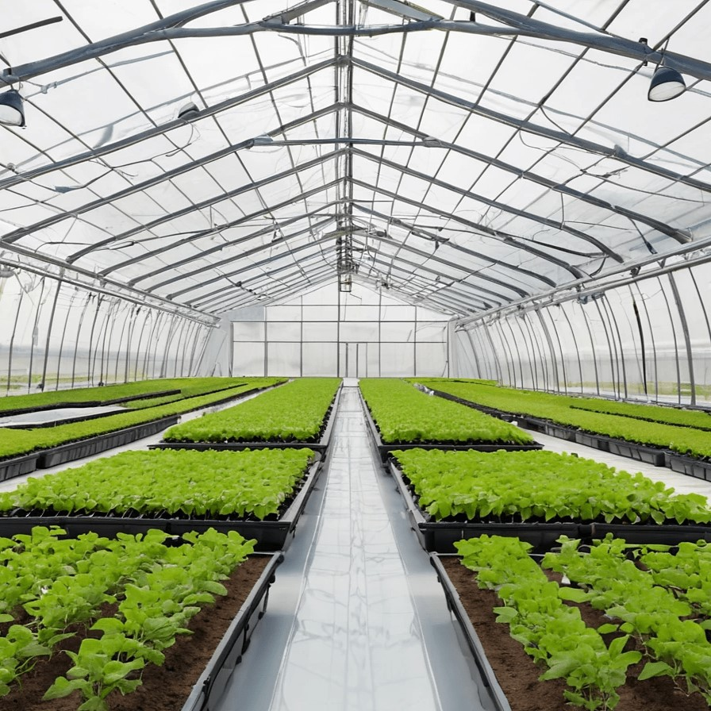

Nuestras Soluciones Tecnológicas

Invernaderos Inteligentes
Control total del ambiente de cultivo con nuestros invernaderos inteligentes que maximizan la producción utilizando tecnologías avanzadas de monitoreo de cultivos.
Sistemas Hidropónicos
Los sistemas hidropónicos permiten el cultivo sin suelo, maximizando el uso de espacio y optimizando el consumo de agua y nutrientes en ambientes urbanos.

Monitoreo Inteligente
Con drones y sensores avanzados, monitoreamos las condiciones del cultivo en tiempo real, ajustando automáticamente el riego y los nutrientes para maximizar la producción.